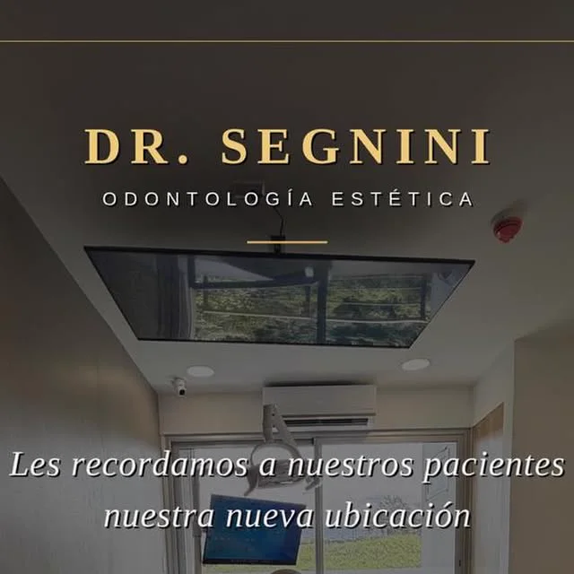
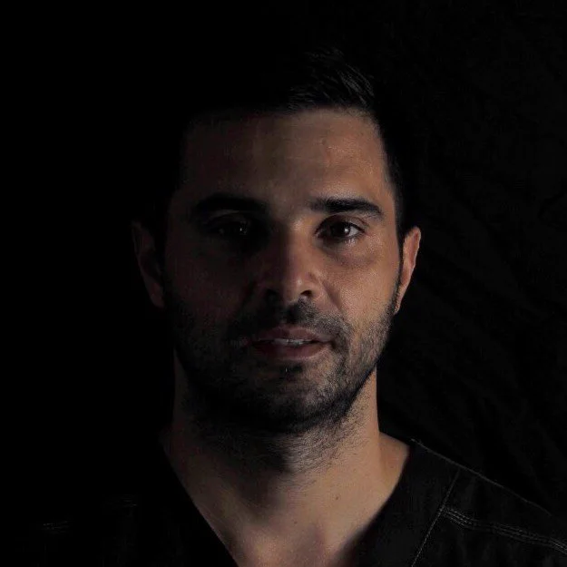
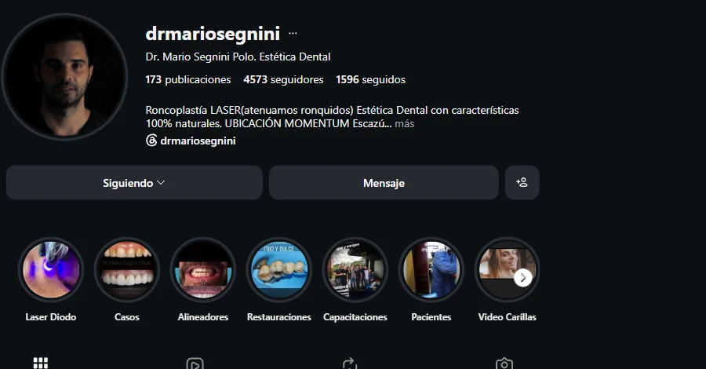
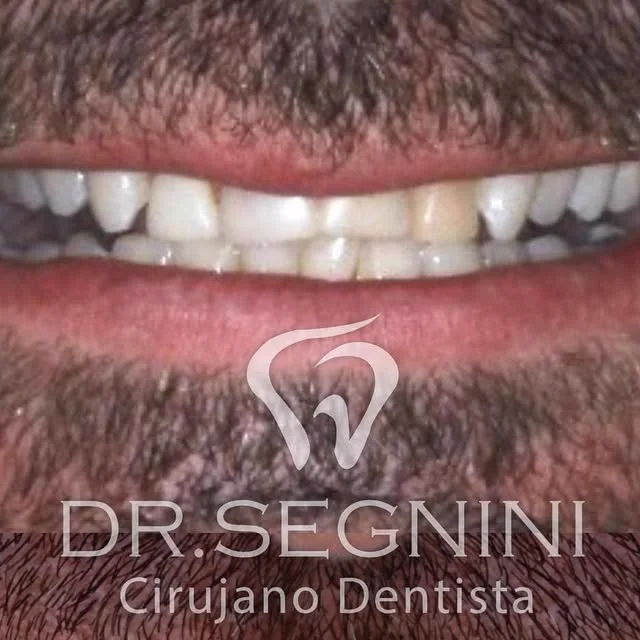
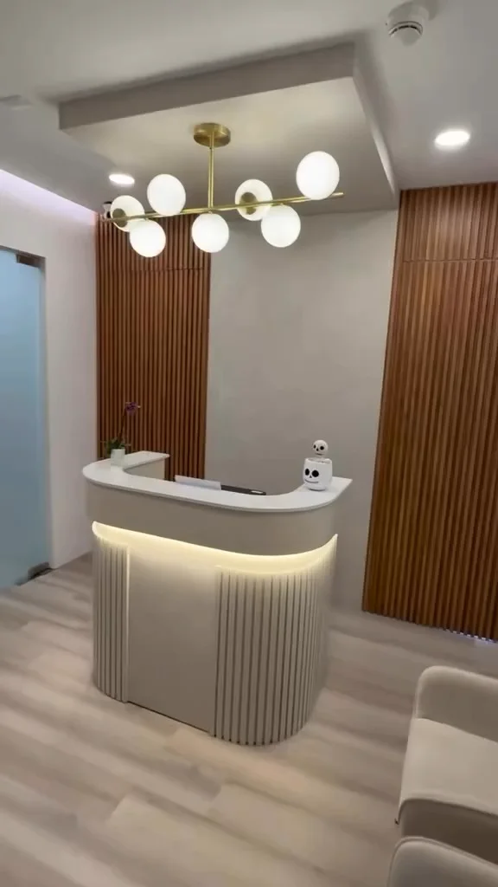
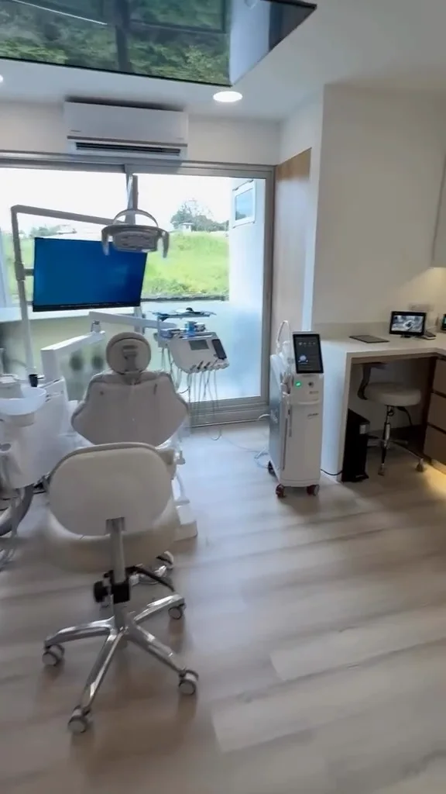
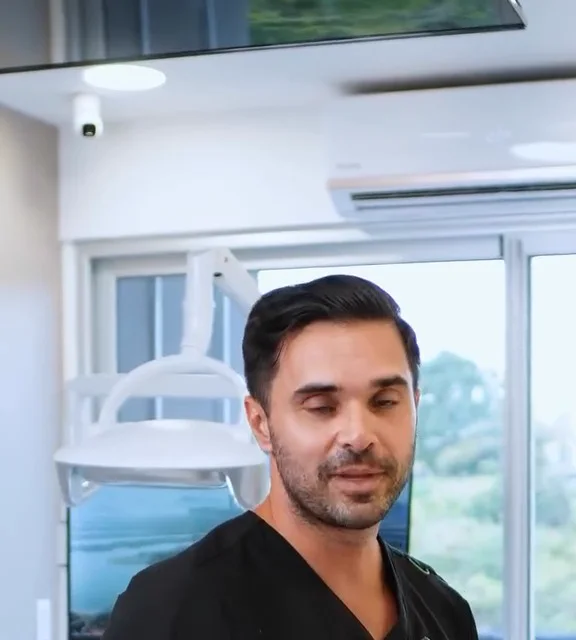
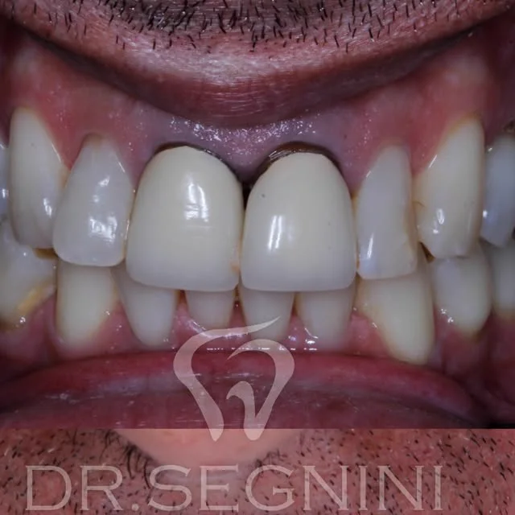

Su marca nueva manda
De su anuncio de Momentum tomamos el dorado, el marco fino con esquinas y las mayúsculas espaciadas de DR. SEGNINI. La web continúa lo que sus pacientes ya reconocen.
Carillas de porcelana, diseño de sonrisa y roncoplastía láser, con resultados 100 % naturales. En Momentum Escazú.

Tiene activado "Reducir movimiento": aquí ve una versión sin desplazamientos. Apáguelo para ver la animación completa.
Cinco razones con datos reales. Cada una ya tiene su respuesta en el diseño.
4.573 personas lo siguen en Instagram. Fuera de ahí, su consultorio no tiene un lugar propio.
Lo que hicimos: partimos de su perfil, su contenido y su marca nueva. Nada se inventó.
Fuente: perfil de Instagram @drmariosegnini, revisado el 18 de noviembre de 2026.

El 92,6 % de la población de Costa Rica usa internet. Las redes sociales llegan al 74,5 %.
Lo que hicimos: una web que le habla también a quien no lo sigue y que aparece cuando lo buscan.
Fuente: DataReportal, «Digital 2025: Costa Rica», datos de enero de 2025.
carillas de porcelana Escazú
www.[DOMINIO]
Dr. Mario Segnini · Odontología estética en Escazú
Carillas de porcelana, diseño de sonrisa y roncoplastía láser. Agendá tu valoración por WhatsApp.
Ilustrativo
El 43 % de quienes buscan dentista en Google elige al que tiene mejores reseñas.
Lo que hicimos: un lugar para sus casos reales y para lo que dicen sus pacientes.
Fuente: IronMonk, encuesta a 1.500 adultos en EE. UU., agosto de 2019.

[TESTIMONIO REAL DE PACIENTE, CON SU PERMISO]
El 96 % de los adultos con celular en Costa Rica usa WhatsApp.
Lo que hicimos: cada botón abre su WhatsApp con el mensaje listo y dice desde qué tratamiento le escriben.
Fuente: CICOM-UCR, «Nuestras apps de cada día 2025».
Dr. Segnini · WhatsApp 6376-5705
Hola, Dr. Segnini. Vi su web y quiero agendar una valoración de roncoplastía láser.
Mensaje listo desde el botón de Roncoplastía
Cuando alguien busque «roncoplastía láser en Escazú», que la respuesta sea usted.
Su clínica nueva merece una dirección propia, además de Instagram.


De su anuncio de Momentum tomamos el dorado, el marco fino con esquinas y las mayúsculas espaciadas de DR. SEGNINI. La web continúa lo que sus pacientes ya reconocen.

Las imágenes salen de su clínica y de su trabajo. Nada de sonrisas de catálogo: cada foto es suya, sobre fondo oscuro, para que la luz caiga sobre lo importante.
Revisamos su contenido y dejamos los tratamientos que aparecen en su trabajo:
Seis tonos, todos tomados de su anuncio de Momentum. El oscuro domina y el dorado aparece solo donde importa.
DR. SEGNINI
Cinzel · para la marca y los nombres de sección. Son las mismas mayúsculas clásicas de su anuncio.
Roncoplastía láser, sin cirugía.
Bodoni Moda · para los titulares. Contraste alto, elegante y fácil de leer en grande.
La tecnología láser trabaja de forma controlada sobre los tejidos blandos del paladar, favorece su firmeza y ayuda a reducir los ronquidos. Es un procedimiento mínimamente invasivo y sin cirugía.
Jost · para leer cómodo en el celular. El texto de muestra sale de su publicación sobre roncoplastía.
Sale de su anuncio de Momentum. Enmarca fotos y casos.
La curva que siguen los dientes superiores en una sonrisa armónica. Subraya los títulos y lleva al botón.
El separador corto de su anuncio. Divide las secciones sin ruido.
Una línea de luz que recorre la sección de tratamientos con láser.
Un solo botón en toda la web, siempre con las mismas palabras. Con el mouse, el dorado se aclara. Al tocarlo, se hunde apenas.

Láser sobre el paladar para reducir los ronquidos. Mínimamente invasivo y sin cirugía.
Consultá por WhatsApp
«Logramos devolver armonía, función y naturalidad.» Así lo cuenta el doctor en su publicación.
Quiero una valoraciónSi esta dirección lo representa, el siguiente paso es construir la web completa: tratamientos, casos reales, la clínica, la ubicación y WhatsApp en cada botón.
Conversemos por WhatsApp